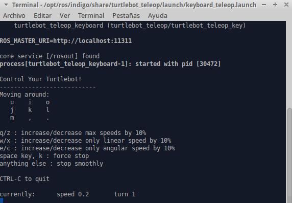

Keyboard Teleop
This tutorial will introduce to you how to control your turtlebot robot using ssh or across the wireless communication with your keyboard.
Note
Make sure that you completed installing all the required packets in the previous tutorials and your network is working fine between the ROS Master node and the Host node.
On the Master node (the turtulebot PC) run the following command:
roslaunch turtlebot_bringup minimal.launch
On your workspace PC (the host node) run the following command:
roslaunch turtlebot_teleop keyboard_teleop.launch
You can move your turtlebot robot according to the instructions below:
Note
Make sure that your turtlebot robot is on a flat surface and on a safe distance from an edge.
Code Explanation
The source code of the keyboard teleop could be found in src/tutlebot/keyboard_teleop folder of the gaitech_doc package.
Note that by default the keyboard teleop application is in the folder /opt/ros/indigo/share/turtlebot_teleop of the ROS distribution.
We explain the following script of the keyboard_teleop.launch file:
<launch>
<!-- turtlebot_teleop_key already has its own built in velocity smoother -->
<node pkg="turtlebot_teleop" type="turtlebot_teleop_key" name="turtlebot_teleop_keyboard" output="screen">
<param name="scale_linear" value="0.5" type="double"/>
<param name="scale_angular" value="1.5" type="double"/>
<remap from="turtlebot_teleop_keyboard/cmd_vel" to="cmd_vel_mux/input/teleop"/>
</node>
</launch>
The launch file runs the ROS node turtlebot_teleop_key of the package turtlebot_teleop.
Notice that the keyboard teleop node takes two parameters(scale_linear and scale_angular)
and they are used to determine the scale of the linear and angular speed of the turtlebot.
It is very important to keep the speed very small when you are testing.
However, you can change the speed value as much as you like, depending on the ground type.
The command <remap from="turtlebot_teleop_keyboard/cmd_vel" to="cmd_vel_mux/input/teleop"/> remap the topic of the velocity command to cmd_vel_mux/input/teleop, which is the topic that the turtlebot uses to receive velocity commands.
In fact, in the turtlebot_teleop_key the programmers used the topic turtlebot_teleop_keyboard/cmd_vel to publish velocity commands, but the turtlebot uses the cmd_vel_mux/input/teleop topic to receive velocity commands.
The remap command allows to change the definition of the turtlebot_teleop_keyboard/cmd_vel to the topic defined in the turtlebot robot.
Without the remap the keyboard teleopartion will not work as the topic used for publishing velocity commands will be different from the one used to receive them in the robot.
Note
You can either control a real turtlebot or a simulated turtlebot (in Stage or Gazebo) using the keyboard teleoperation. If for some reason it does not work, make sure to correctly map the ROS topic over which the robot receives velocity commands.
Video Demonstration
You can watch an illustration of keyboard teleoperation of the turtlebot in this video
Questions
- Read the code of
keyboad_teleop.cppandkeyboad_teleop.py. What is the topic used to publish velocity commands to the robot? What the line of code that does that? - What is the topic that the turtlebot uses to receive velocity commands? How can you find this information?
- What is the technique used to link the topic of the velocity command published by the keyboard teleop node and the velocity command topic received by the robot?
- What is the role of
scale_linearandscale_angular. Explain.